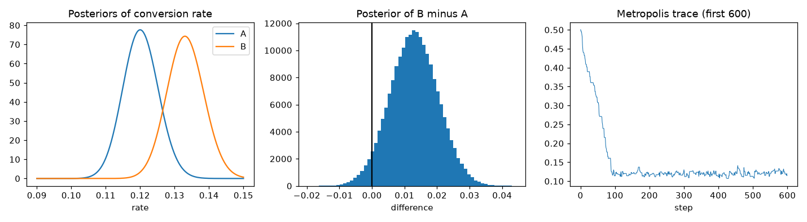
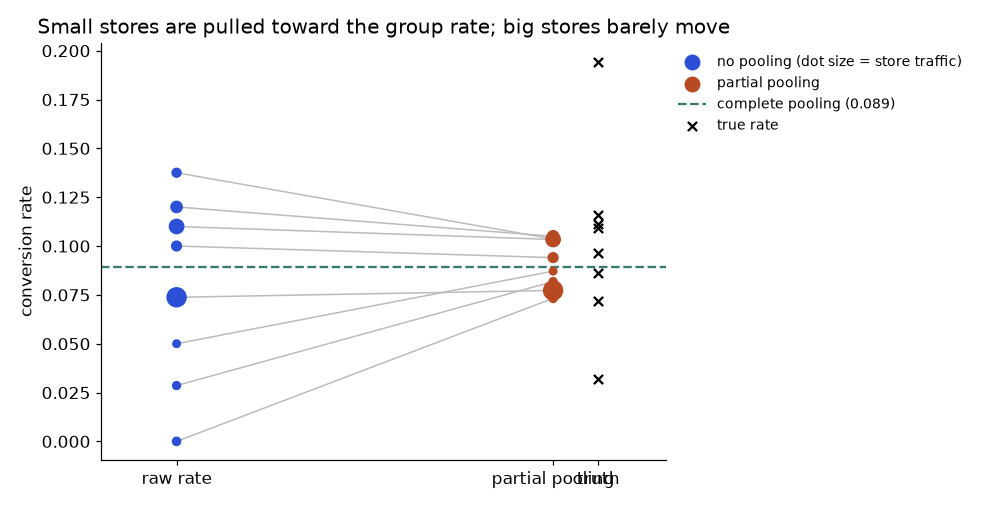
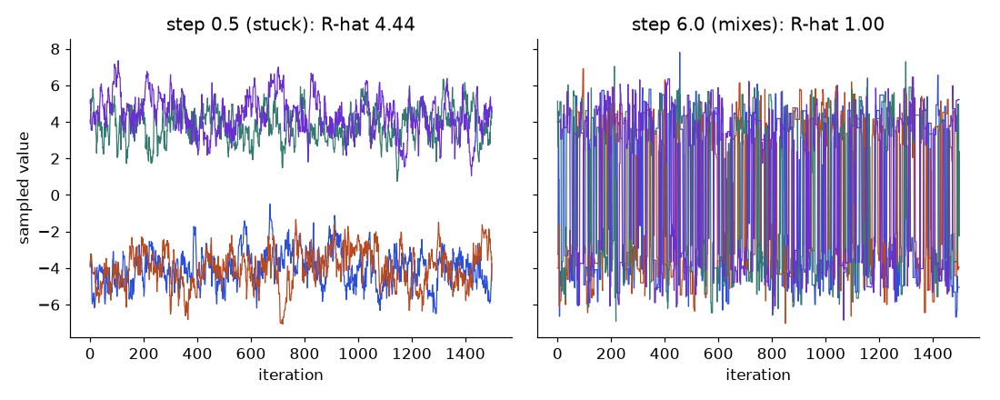

Your team ran an A/B test on a checkout page. The frequentist report says "p = 0.08, not significant" and the product manager asks: "So what is the chance that the new page is actually better?" A p-value cannot answer that question. It tells you how surprising the data would be if there were no difference, not how likely it is that B wins. Bayesian statistics answers the manager's question directly. In this chapter you learn the Bayesian recipe (prior, likelihood, posterior), the conjugate shortcuts that make it a few lines of arithmetic, credible intervals, a full Bayesian A/B test with decision-making, and the intuition for MCMC, the computer method used when no shortcut exists. We build on Bayes' theorem from the Math PDF and on the Beta and Gamma distributions from Chapter 2. We also compare honestly with the frequentist way from Chapters 3 and 4.
Running example: an A/B test of a checkout page. Version A: 480 purchases from 4,000 visitors (12.0 percent). Version B: 532 purchases from 4,000 visitors (13.3 percent). All outputs below are computed with NumPy and SciPy (PyMC and Stan are not installed here, so those calls are "not run here").
| Word | Plain meaning | Example |
|---|---|---|
| Parameter θ | The unknown number we want to learn | True conversion rate of page A |
| Prior p(θ) | What we believe about θ before seeing data | "Rates are usually around 10 percent" |
| Likelihood p(data given θ) | How probable the data is for each possible θ | 480 of 4,000 is likely if θ ≈ 0.12 |
| Posterior p(θ given data) | Belief about θ after seeing data | Bell curve around 0.120 |
| Evidence p(data) | A normalising number so the posterior sums to 1 | Often ignored; computed by software |
Bayes' theorem (Math PDF) applied to a parameter:
posterior ∝ likelihood × prior
p(θ | data) = p(data | θ) × p(θ) / p(data)The symbol ∝ means "proportional to". The denominator p(data) is just a constant that makes the area equal to 1.
Frequentists treat θ as a fixed, unknown number and the data as random. Bayesians treat θ as uncertain (described by a distribution) and the data as fixed once observed. So a Bayesian can say "P(θ is between 0.11 and 0.13) = 0.95". A frequentist cannot say this about a single interval.
Problem 9.1.1 (tiny, discrete) A bag holds one coin: either fair (P(heads) = 0.5) or biased (P(heads) = 0.8). You think the bag is fair with probability 0.9. You flip 3 times and see 3 heads. What is the posterior probability that the coin is biased?
| Step 1 | Prior: fair 0.9, biased 0.1. |
|---|---|
| Step 2 | Likelihood of 3 heads: fair 0.5³ = 0.125; biased 0.8³ = 0.512. |
| Step 3 | Multiply: fair 0.9 × 0.125 = 0.1125; biased 0.1 × 0.512 = 0.0512. Sum = 0.1637. |
| Step 4 | Normalise: biased = 0.0512/0.1637 = 0.313; fair = 0.687. |
| Answer | After 3 heads, the chance the coin is biased rises from 10 percent to 31.3 percent. |
| Check | Posterior probabilities add to 1 (0.313 + 0.687). The evidence moved the belief toward "biased", as it should, but 3 flips are not enough to overturn a strong prior. |
| Why it matters | This is the whole method: multiply prior by likelihood, then rescale. |
Connection to the real job. Spam filters (naive Bayes), A/B testing platforms, recommender cold-start, medical diagnosis, forecasting with uncertainty, and the idea of "prior" in regularization: a ridge penalty is the same as a Normal prior on the coefficients, and lasso is a Laplace prior (Chapter 7).
Applications
Check yourself
Prior: θ ~ Beta(a, b). The Beta distribution lives on 0 to 1; read a as "prior successes" and b as "prior failures". Data: k successes in n trials. Then:
posterior = Beta(a + k, b + n − k)
posterior mean = (a + k) / (a + b + n)Beta(1, 1) is flat: "any rate is equally likely".
Problem 9.2.1 (tiny) 3 purchases from 10 visitors, flat prior Beta(1, 1). Find the posterior, its mean, mode and 95 percent credible interval.
| Step 1 | Posterior = Beta(1 + 3, 1 + 7) = Beta(4, 8). |
|---|---|
| Step 2 | Mean = 4/12 = 0.333. Mode = (4 − 1)/(12 − 2) = 0.30, the same as the raw rate 3/10. |
| Step 3 | 2.5th and 97.5th percentiles of Beta(4, 8) (from SciPy): 0.109 and 0.610. |
| Answer | With 10 visitors, the rate is probably between 11 percent and 61 percent: wide, honestly. |
| Check | The mean (0.333) is pulled slightly toward 0.5 (the flat prior) from 0.30. Fine. |
| Why it matters | Few data points give a wide interval. The Bayesian answer shows this automatically. |
Problem 9.2.2 (prior sensitivity) The same 30 percent rate, seen with 10, 100 and 1,000 visitors, under four different priors. Posterior mean (and 95 percent interval):
| Prior | 3 of 10 | 30 of 100 | 300 of 1000 |
|---|---|---|---|
| Beta(1, 1) flat | 0.333 (0.109 to 0.610) | 0.304 (0.219 to 0.396) | 0.300 (0.272 to 0.329) |
| Beta(2, 8) mean 0.2, weak | 0.250 (0.092 to 0.456) | 0.291 (0.210 to 0.379) | 0.299 (0.271 to 0.328) |
| Beta(20, 80) mean 0.2, strong | 0.209 (0.139 to 0.290) | 0.250 (0.193 to 0.312) | 0.291 (0.264 to 0.318) |
| Beta(50, 50) mean 0.5, strong and wrong | 0.482 (0.389 to 0.575) | 0.400 (0.333 to 0.469) | 0.318 (0.291 to 0.346) |
Prior: μ ~ Normal(μ₀, τ²). Data: n observations, sample mean x̄, known standard deviation σ. Work with precision = 1/variance:
posterior precision = 1/τ² + n/σ²
posterior mean = (μ₀/τ² + n·x̄/σ²) / posterior precisionThe posterior mean is a weighted average of the prior mean and the data mean, with weights equal to the precisions.
Problem 9.2.3 Past months suggest a mean delivery time of 500 minutes with prior SD τ = 50. A new sample: n = 25, x̄ = 450 minutes, σ = 100 minutes (assumed known). Find the posterior.
| Step 1 | Prior precision = 1/50² = 0.0004. Data precision = 25/100² = 0.0025. Total = 0.0029. |
|---|---|
| Step 2 | Posterior mean = (500 × 0.0004 + 450 × 0.0025) / 0.0029 = (0.2 + 1.125)/0.0029 = 456.9 minutes. |
| Step 3 | Posterior SD = 1/√0.0029 = 18.57 minutes. 95 percent interval = 456.9 ± 1.96 × 18.57 = 420.5 to 493.3. |
| Answer | The data got weight 0.0025/0.0029 = 86 percent and the prior 14 percent. The delivery time is about 457 minutes (420 to 493). |
| Check | The posterior mean lies between 450 and 500, closer to the data. The posterior SD (18.6) is smaller than both the prior SD (50) and the data's SE (100/5 = 20). Combining sources reduces uncertainty. |
| Why it matters | This weighted-by-precision average is also what Bayesian shrinkage, mixed models and Kalman filters do. |
Prior: λ ~ Gamma(α, rate β) with mean α/β. Data: counts adding up to S over m periods. Posterior = Gamma(α + S, β + m).
Problem 9.2.4 Prior for customer complaints per hour: Gamma(2, 0.5) (mean 4). We observe 60 complaints in 12 hours. Find the posterior mean and interval.
| Step 1 | Posterior = Gamma(2 + 60, 0.5 + 12) = Gamma(62, 12.5). |
|---|---|
| Step 2 | Mean = 62/12.5 = 4.96. The raw rate (MLE) is 60/12 = 5.0. |
| Step 3 | 95 percent interval (SciPy) = 3.80 to 6.27. |
| Answer | About 5 complaints per hour, plausibly between 3.8 and 6.3. |
| Check | The mean (4.96) sits between the prior mean (4) and the data rate (5), very close to the data since the data has 12 "units" against 0.5 for the prior. |
| Why it matters | Count rates with credible intervals: usable for alerting thresholds. |
| Data type | Likelihood | Conjugate prior | Posterior update |
|---|---|---|---|
| Yes/No counts | Binomial | Beta(a, b) | Beta(a + k, b + n − k) |
| Counts per period | Poisson | Gamma(α, β) | Gamma(α + S, β + m) |
| Mean with known σ | Normal | Normal | precision-weighted average |
The picture. The first panel of the figure at the end of 9.3 shows two posterior bell curves. The x-axis is the possible conversion rate, the y-axis is how plausible each rate is. A taller, narrower curve means more certainty.
Connection to the real job. Conjugate updates are used in real-time systems: each click updates two numbers (a, b) per ad. This is how many bandit and ad-ranking systems work cheaply (Thompson sampling: draw one value from each posterior, show the ad with the highest draw).
Applications
Check yourself
An equal-tailed 95 percent credible interval runs from the 2.5th to the 97.5th percentile of the posterior. A highest density interval (HDI) is the shortest interval holding 95 percent, which matters when the posterior is skewed. For Beta(3, 11), the equal-tailed interval is 0.050 to 0.454 while the HDI is 0.032 to 0.421: shorter, shifted toward the peak.
How does this differ from a confidence interval (Chapter 3)? The confidence interval's 95 percent is a statement about the method over repeated experiments. The credible interval's 95 percent is a statement about this parameter, but it depends on the prior.
Recipe: (1) a Beta posterior for each version, (2) draw many samples from each, (3) compare the draws.
Problem 9.3.1 A: 480 of 4,000. B: 532 of 4,000. Flat Beta(1, 1) priors. Compute the posteriors, P(B > A), the lift and the expected loss.
| Step 1 | Posterior A = Beta(481, 3521): mean 0.1202, 95% interval 0.1103 to 0.1304. Posterior B = Beta(533, 3469): mean 0.1332, 95% interval 0.1228 to 0.1439. |
|---|---|
| Step 2 | Draw 200,000 samples from each, subtract: difference d = θ_B − θ_A. |
| Step 3 | Mean of d = 0.0129 (1.29 percentage points). 95% credible interval for d: −0.0016 to +0.0276. |
| Step 4 | P(B > A) = share of draws where B's rate is bigger = 0.960. Relative lift mean = +11.0 percent, 95% interval −1.2 to +24.3 percent. |
| Step 5 | P(lift is more than half a point) = 0.858. |
| Step 6 | Expected loss: if we choose B and we are wrong, how much do we lose on average? E[max(θ_A − θ_B, 0)] = 0.00012 (0.012 points). If we choose A and are wrong: E[max(θ_B − θ_A, 0)] = 0.01306 (1.3 points). |
| Answer | There is a 96 percent chance B is better. If we ship B, the average downside is only 0.012 points; if we keep A, the average missed gain is 1.3 points. The decision rule "ship B if expected loss is below a tolerance (say 0.1 points)" says ship B. |
| Check | The mean difference (0.0129) matches the raw difference 0.1330 − 0.1200 = 0.0130. The interval for d includes 0 slightly (−0.0016), consistent with P(B > A) not being above 0.975. |
| Why it matters | The manager asked "what is the chance B is better?" and we answered: 96 percent. No p-value gymnastics. |
Problem 9.3.2 (compare with the frequentist test) Run the two-proportion z-test on the same data.
| Formula | Pooled p = (480 + 532)/8000 = 0.1265; SE = √(p(1−p) × (1/4000 + 1/4000)). |
|---|---|
| Compute | SE = √(0.1265 × 0.8735 × 0.0005) = 0.007433. z = 0.0130/0.007433 = 1.749. Two-sided p = 0.0803. One-sided p = 0.0401. |
| Confidence interval for the difference | −0.0016 to +0.0276 (this is almost identical to the Bayesian interval, −0.0016 to 0.0276). |
| Answer | The frequentist test says "p = 0.08: not significant at 5 percent". The Bayesian says "96 percent chance B is better". The two agree numerically: P(B > A) = 0.960 ≈ 1 − one-sided p (1 − 0.0401 = 0.9599). With a flat prior and lots of data they carry the same information. They only differ in the question they answer and the language they use. |
| Check | If someone claims one method says "B wins" and the other "no difference", they are using different thresholds, not different evidence. |
| Why it matters | Neither method hands you the decision. Cost, risk and the size of the effect decide. The Bayesian expected loss makes that step explicit. |
Problem 9.3.3 (informative prior) Past tests on this page type suggest conversion near 12 percent, worth about 1,000 visitors of information: prior Beta(120, 880) for both.
| Compute | P(B > A) = 0.942 (instead of 0.960). |
|---|---|
| Answer | The informed prior shrinks both rates toward 12 percent, so the gap shrinks a bit. Conclusion is still "likely B is better", but slightly less sure. |
| Why it matters | A prior from history is legitimate, but state it and show the sensitivity. |

Left: posterior curves for A (blue) and B (orange). They overlap a little in the middle, which is why the answer is 96 percent and not 100 percent. Middle: a histogram of the 200,000 draws of θ_B − θ_A. The black line at 0 marks "no difference". Almost all the mass sits to the right of it. Right: a Metropolis trace, explained in 9.4.
Connection to the real job. Experimentation platforms (many internal tools and vendors use Beta-Binomial or similar), feature-flag rollouts, ad testing.
Applications
Check yourself
Most real models (logistic regression with priors, hierarchical models) have no conjugate shortcut. Computing the denominator p(data) needs a high-dimensional integral. MCMC avoids it: the Metropolis rule needs only the ratio of two heights, and the unknown constant p(data) cancels. A Markov chain is a walk where the next position depends only on the current one (see the Math PDF on Markov chains). Under mild conditions, the chain's long-run distribution is the posterior.
Problem 9.4.1 Use Metropolis to sample the posterior for conversion rate A (480 of 4,000, flat prior). We know the exact answer, Beta(481, 3521), so we can check. Start at θ = 0.5, proposal SD 0.01, 20,000 steps.
| Step 1 | The first values: 0.5, 0.5, 0.4946, 0.4946, 0.4876... The chain starts far away (0.5 is a silly conversion rate) and walks down. Repeated numbers are rejected proposals. |
|---|---|
| Step 2 | Drop the first 1,000 steps (burn-in). Acceptance rate overall: 0.508. |
| Step 3 | Mean = 0.1202, SD = 0.00509, 95 percent interval = 0.1102 to 0.1303. |
| Answer | The exact posterior has mean 0.12019 and SD 0.00514. The chain matches to three digits. |
| Check | Exact interval from the Beta: 0.1103 to 0.1304. Matches. |
| Why it matters | The same code works for models with no formula for the posterior. Only logpost changes. |
def logpost(th, k, n): # log of likelihood x flat prior
if th <= 0 or th >= 1: return -np.inf # outside 0..1 is impossible
return k*np.log(th) + (n-k)*np.log(1-th)
def mh(k, n, step, N=20000, start=0.5, seed=0):
r = np.random.default_rng(seed); th = start; lp = logpost(th, k, n)
chain = np.empty(N)
for i in range(N):
prop = th + step * r.normal() # propose a nearby value
lq = logpost(prop, k, n)
if np.log(r.uniform()) < lq - lp: # accept with prob min(1, ratio)
th, lp = prop, lq
chain[i] = th # record (even if we stayed)
return chainProblem 9.4.2 Same target. What happens with a bad proposal step size?
| Step SD | Acceptance rate | Mean after burn-in | SD | Lag-1 autocorrelation | Verdict |
|---|---|---|---|---|---|
| 0.0001 (too small) | 0.883 | 0.323 | 0.081 | 0.99999 | Stuck, not yet converged (the true mean is 0.120) |
| 0.01 (good) | 0.509 | 0.1201 | 0.0051 | 0.635 | Good |
| 0.5 (too big) | 0.014 | 0.1212 | 0.0052 | 0.981 | Wastes proposals; accepts 1.4 percent |
Several chains and R-hat. Run 2 chains from different starts (0.9 and 0.05). After burn-in their means were 0.12015 and 0.12036. The R-hat statistic compares variation between chains with variation within chains; values close to 1 (here 1.0004) mean the chains agree. A common rule: R-hat below 1.01 to 1.05 depending on the guide you follow.
The right panel of the earlier figure shows the trace of the good chain: the first 600 steps. The x-axis is the step number, the y-axis is θ. The line starts at 0.5, drops quickly to about 0.12, and then wanders in a narrow band: a "hairy caterpillar" with no trends is what you want to see.
PyMC sketch (not run here):
# not run here: PyMC is not installed in this environment
import pymc as pm
with pm.Model():
pa = pm.Beta("pa", 1, 1); pb = pm.Beta("pb", 1, 1)
pm.Binomial("ya", n=4000, p=pa, observed=480)
pm.Binomial("yb", n=4000, p=pb, observed=532)
pm.Deterministic("diff", pb - pa)
idata = pm.sample(2000, chains=4)Check names and defaults in the version you install.
Connection to the real job. PyMC, Stan, and NumPyro are the standard tools. You use MCMC for hierarchical models, Bayesian regression with uncertainty, and when a stakeholder needs an interval for something complicated.
Applications
Check yourself
| Question | Frequentist | Bayesian |
|---|---|---|
| What is probability? | Long-run frequency | Degree of belief |
| What is random? | The data (parameter is fixed) | The parameter (data is fixed) |
| Interval | Confidence interval (about the method) | Credible interval (about the parameter) |
| Prior information | Not used formally | Built in through the prior |
| Typical output | p-value, CI | Posterior, P(B > A), expected loss |
| Cost | Fast formulas | Needs priors, sometimes MCMC |
| Works well when | Large samples, standard tests, regulatory settings | Small data, sequential updating, decisions, hierarchical structure |
A posterior is only as good as the model that produced it. Bayes' rule will happily give you a tight, confident interval for the rate of a Poisson model even if the data are nothing like Poisson. The Bayesian workflow therefore has two checks that use the model as a data generator.
Problem 9.6.1 You have 120 days of support tickets. You fit a Poisson-Gamma model (conjugate, so no MCMC needed) and want to know whether Poisson is believable. The data were secretly generated from an overdispersed process with mean 5.
import numpy as np
rng = np.random.default_rng(91)
# Observed: 120 days of support tickets. Truth is overdispersed (negative binomial), analyst assumes Poisson.
y = rng.negative_binomial(n=2, p=2/(2+5), size=120) # mean 5, variance 17.5
print("observed: mean", round(y.mean(), 2), " variance", round(y.var(ddof=1), 2), " zeros", (y == 0).sum(), " max", y.max())
# Conjugate Poisson-Gamma: prior Gamma(2, 0.2) (mean 10), posterior Gamma(2 + sum y, 0.2 + n)
a, b = 2 + y.sum(), 0.2 + len(y)
lam = rng.gamma(a, 1 / b, 4000)
print(f"posterior mean rate {a/b:.2f}, 95% interval ({np.percentile(lam, 2.5):.2f}, {np.percentile(lam, 97.5):.2f})")
# Posterior predictive check: simulate a replicated dataset for each draw, compare statistics
rep = rng.poisson(lam[:, None], (4000, len(y)))
for name, f, obs in [("variance", lambda r: r.var(axis=1, ddof=1), y.var(ddof=1)),
("max", lambda r: r.max(axis=1), y.max()),
("zeros", lambda r: (r == 0).sum(axis=1), (y == 0).sum())]:
t = f(rep)
print(f"{name:>8}: observed {obs:6.2f} replicated 95% range ({np.percentile(t, 2.5):.1f}, {np.percentile(t, 97.5):.1f}) P(T_rep >= T_obs) = {(t >= obs).mean():.3f}")
# Prior predictive check of a careless prior: log(rate) ~ Normal(0, 10^2)
lr = rng.normal(0, 10, 100000)
cnt = rng.poisson(np.exp(np.clip(lr, -30, 30)))
print("careless prior, share of prior predictive counts above 1,000,000:", round((cnt > 1e6).mean(), 3),
" share equal to 0:", round((cnt == 0).mean(), 3))observed: mean 5.17 variance 20.48 zeros 10 max 21
posterior mean rate 5.17, 95% interval (4.78, 5.60)
variance: observed 20.48 replicated 95% range (3.9, 6.7) P(T_rep >= T_obs) = 0.000
max: observed 21.00 replicated 95% range (10.0, 15.0) P(T_rep >= T_obs) = 0.000
zeros: observed 10.00 replicated 95% range (0.0, 3.0) P(T_rep >= T_obs) = 0.000
careless prior, share of prior predictive counts above 1,000,000: 0.083 share equal to 0: 0.476| Step 1 | The data have mean 5.17 but variance 20.48. A Poisson model needs variance equal to the mean, so the first warning is already visible. |
|---|---|
| Step 2 | The posterior for the rate is tight: mean 5.17, 95 percent interval (4.78, 5.60). The model sounds very sure. |
| Step 3 | Simulate 4,000 replicated datasets of 120 days. Replicated variance falls in (3.9, 6.7); observed is 20.48, so the tail probability P(T_rep ≥ T_obs) is 0.000. |
| Step 4 | The same story for the maximum (replicas reach 10 to 15, the real data reached 21) and for zeros (replicas 0 to 3, real data 10). |
| Step 5 | Prior predictive: a careless prior of log(rate) ~ Normal(0, 10²) looks vague, but 8.3 percent of the data it generates are above 1,000,000 and 47.6 percent are exactly 0. No analyst believes either. |
| Answer | Poisson fails on variance, maxima and zeros together. Switch to a negative binomial (Poisson with a Gamma-distributed rate) and repeat the check. The tight interval in Step 2 was precise and wrong. |
Credible intervals describe a parameter inside one model. Sometimes the question is which of two models the data favour: "is this coin fair (θ = 0.5) or biased (θ unknown)?" The Bayes factor answers it:
Each p(data | H) is the marginal likelihood: the probability of the data averaged over the prior for that hypothesis. For a coin with k heads in n flips, H0 gives 0.5n and H1 with a Beta(a, b) prior gives B(k + a, n − k + b) / B(a, b), where B is the Beta function. The binomial coefficient is common to both and cancels.
Read BF10 = 3 as "the data are 3 times more probable under H1", mild evidence; 10 is strong, 100 is decisive. A BF below 1 is evidence for the null, something a p-value can never give you.
Problem 9.7.1 Compute the Bayes factor for five coin datasets, with a flat Beta(1, 1) prior under H1 and with a more skeptical Beta(10, 10) prior that expects θ near 0.5. Put the p-value next to it.
import numpy as np
from scipy.special import betaln
from scipy.stats import binomtest
def log_bf10(k, n, a=1.0, b=1.0):
# H0: theta = 0.5. H1: theta ~ Beta(a, b). Binomial coefficient cancels.
log_m1 = betaln(k + a, n - k + b) - betaln(a, b)
log_m0 = n * np.log(0.5)
return log_m1 - log_m0
print("data p-value BF10 (Beta(1,1)) BF10 (Beta(10,10)) P(H1|data) at 50/50 prior odds")
for k, n in [(62, 100), (55, 100), (530, 1000), (5100, 10000), (5250, 10000)]:
p = binomtest(k, n, 0.5).pvalue
b1, b2 = np.exp(log_bf10(k, n)), np.exp(log_bf10(k, n, 10, 10))
print(f"{k:>5}/{n:<6} {p:8.1e} {b1:15.3f} {b2:17.3f} {b1/(1+b1):12.3f}")data p-value BF10 (Beta(1,1)) BF10 (Beta(10,10)) P(H1|data) at 50/50 prior odds
62/100 2.1e-02 2.214 4.620 0.689
55/100 3.7e-01 0.204 0.615 0.170
530/1000 6.2e-02 0.239 0.810 0.193
5100/10000 4.7e-02 0.093 0.325 0.085
5250/10000 6.0e-07 3376.207 11622.591 1.000| Step 1 | 62 heads of 100: p = 0.021, which a frequentist calls significant. The Bayes factor is only 2.2 (flat prior), anecdotal at best. The posterior probability of H1 is 0.69 at even prior odds. |
|---|---|
| Step 2 | 55 of 100: BF = 0.20, so the data favour the fair coin by about 5 to 1. A p-value of 0.37 could only say "no evidence against". |
| Step 3 | 5,100 of 10,000: p = 0.047 (significant) but BF = 0.093, which favours the null by 11 to 1. This is the Lindley paradox: with huge samples, a tiny deviation can be statistically significant and still more probable under "exactly fair" than under a wide alternative. |
| Step 4 | 5,250 of 10,000: p = 6e-7 and BF = 3,376. Now both agree. |
| Step 5 | The Beta(10, 10) column is higher in every row: if H1 says the bias is likely small, a small observed bias is more probable under H1. The BF depends on the prior you give H1. |
| Answer | Report the BF together with the prior used, and show how it changes under two or three reasonable priors. |
Bayes factors for nested hypotheses can be computed from MCMC output with the Savage-Dickey ratio (posterior density at the null value divided by prior density there). For model choice among predictive models, practitioners often prefer cross-validation scores such as LOO (leave-one-out) because they are less sensitive to prior width and work when no model is exactly true.
Suppose you run 8 stores and want each store's conversion rate. Two obvious answers are both flawed. No pooling uses each store's own rate. It is unbiased, but a store with 50 visitors and 0 sales gets a rate of exactly 0.000. Complete pooling uses one rate for everyone. It is stable but ignores real differences. A hierarchical model sits between them: each store has its own rate, and those rates are drawn from a shared population distribution, here Beta(α, β). The data estimate α and β, which decide how much to trust each store.
The posterior mean for store i is (ki + α) / (ni + α + β), which is a weighted average of the store's raw rate and the population mean, with weight ni / (ni + α + β) on the store's own data. Big stores keep their own numbers; small stores borrow strength. This is the same shrinkage idea as the mixed models in chapter 11 and ridge in chapter 7.
Problem 9.8.1 Eight stores with 20 to 800 visitors. True rates were drawn from a population around 12 percent. Fit the population Beta by maximum marginal likelihood (an "empirical Bayes" shortcut for a full hierarchical fit), then compare the three estimators against the truth.
import numpy as np
from scipy.optimize import minimize
from scipy.special import betaln
n = np.array([20, 35, 50, 80, 120, 200, 400, 800])
rng = np.random.default_rng(92)
true_p = rng.beta(4, 28, 8) # stores vary around 12.5 percent
k = rng.binomial(n, true_p)
raw = k / n
def nll(t):
a, b = np.exp(t)
return -(betaln(k + a, n - k + b) - betaln(a, b)).sum() # beta-binomial marginal likelihood (constants dropped)
r = minimize(nll, [np.log(10), np.log(80)], method="Nelder-Mead")
a, b = np.exp(r.x)
pooled = k.sum() / n.sum()
partial = (k + a) / (n + a + b)
print(f"fitted population prior: Beta({a:.1f}, {b:.1f}), mean {a/(a+b):.3f}, equivalent prior sample size {a+b:.0f}")
print(f"complete pooling rate: {pooled:.3f}")
print("store n k no pooling partial pooling weight on own data true p")
for i in range(8):
w = n[i] / (n[i] + a + b)
print(f"{i+1:>5} {n[i]:>4} {k[i]:>5} {raw[i]:10.3f} {partial[i]:15.3f} {w:18.2f} {true_p[i]:6.3f}")
print("squared error vs truth: no pooling", round(((raw - true_p)**2).sum(), 5), " partial", round(((partial - true_p)**2).sum(), 5), " complete", round(((pooled - true_p)**2).sum(), 5))fitted population prior: Beta(19.0, 190.9), mean 0.091, equivalent prior sample size 210
complete pooling rate: 0.089
store n k no pooling partial pooling weight on own data true p
1 20 1 0.050 0.087 0.09 0.032
2 35 1 0.029 0.082 0.14 0.109
3 50 0 0.000 0.073 0.19 0.111
4 80 11 0.138 0.104 0.28 0.194
5 120 12 0.100 0.094 0.36 0.096
6 200 24 0.120 0.105 0.49 0.086
7 400 44 0.110 0.103 0.66 0.116
8 800 59 0.074 0.077 0.79 0.072
squared error vs truth: no pooling 0.02355 partial 0.014 complete 0.01629
How to read it: Follow a grey line. Short lines belong to large dots (high traffic): their raw rate was already trustworthy. Long lines belong to small dots: the raw rate was noisy, so it is pulled toward the group rate. The crosses show that, on average, the pulled values are closer to the truth.
| Step 1 | The fitted population is Beta(19.0, 190.9): mean 0.091, worth about 210 visitors of prior information. |
|---|---|
| Step 2 | Store 3 saw 50 visitors and 0 sales. No pooling says 0.000. Partial pooling says 0.073 because its weight on its own data is only 50 / (50 + 210) = 0.19. |
| Step 3 | Store 8 saw 800 visitors, so it keeps weight 0.79 on its own rate, and moves only from 0.074 to 0.077. |
| Step 4 | Total squared error against the truth: no pooling 0.0236, complete pooling 0.0163, partial pooling 0.0140. |
| Answer | Partial pooling won, but modestly: with only 8 stores the population estimate is itself noisy. The advantage grows with more stores and more variation in store size. |
mu = pm.Beta("mu", 1, 1); kappa = pm.HalfNormal("kappa", 100); p = pm.Beta("p", mu * kappa, (1 - mu) * kappa, shape=8); pm.Binomial("k", n=n, p=p, observed=k). PyMC is not installed here, so this was not run; the code above uses the empirical Bayes shortcut and was run.Section 9.4 showed that a bad sampler can look fine. Three numbers tell you whether to trust a run. Always look at all three before you read a posterior.
Problem 9.9.1 Target: two well-separated bumps at -4 and +4. Run 4 Metropolis chains, two started at each bump, once with a small step (0.5) and once with a large step (6). Compute split R-hat and ESS.
import numpy as np
def metropolis(logp, start, step, N, seed):
r = np.random.default_rng(seed); x = start; lp = logp(x); out = np.empty(N); acc = 0
for i in range(N):
p = x + step * r.normal(); lq = logp(p)
if np.log(r.uniform()) < lq - lp: x, lp = p, lq; acc += 1
out[i] = x
return out, acc / N
def split_rhat(ch): # ch: (chains, draws); split each chain in two
m, n = ch.shape; h = n // 2
s = np.vstack([ch[:, :h], ch[:, h:2*h]])
W = s.var(axis=1, ddof=1).mean(); B = h * s.mean(axis=1).var(ddof=1)
return np.sqrt(((h - 1) / h * W + B / h) / W)
def ess(ch): # between-chain-aware ESS (Vehtari et al. style, simple truncation)
m, n = ch.shape; x = ch - ch.mean(axis=1, keepdims=True)
W = ch.var(axis=1, ddof=1).mean(); B = n * ch.mean(axis=1).var(ddof=1)
var_plus = (n - 1) / n * W + B / n
acov = lambda l: np.mean([np.dot(c[:n-l], c[l:]) / n for c in x])
rho = [1 - (W - acov(l)) / var_plus for l in range(300)]
tau = 1.0
for l in range(1, 299, 2):
pair = rho[l] + rho[l + 1]
if pair < 0: break
tau += 2 * pair
return m * n / tau
mix = lambda x: np.logaddexp(-0.5 * (x - 4) ** 2, -0.5 * (x + 4) ** 2) # two bumps at -4 and +4
starts = [-4.0, -4.0, 4.0, 4.0]
res = {}
for name, step in [("step 0.5 (stuck)", 0.5), ("step 6.0 (mixes)", 6.0)]:
chains, accs = zip(*[metropolis(mix, s, step, 4000, i) for i, s in enumerate(starts)])
res[name] = np.array(chains)
print(f"{name:>18}: acceptance {np.mean(accs):.2f}, split R-hat {split_rhat(res[name]):.2f}, ESS {ess(res[name]):.0f} of {res[name].size}, share of draws above 0: {(res[name] > 0).mean():.2f}")
print("truth: the target is symmetric, so the share above 0 should be 0.50 and the mean 0") step 0.5 (stuck): acceptance 0.84, split R-hat 4.44, ESS 28 of 16000, share of draws above 0: 0.50
step 6.0 (mixes): acceptance 0.29, split R-hat 1.00, ESS 1317 of 16000, share of draws above 0: 0.52
truth: the target is symmetric, so the share above 0 should be 0.50 and the mean 0
How to read it: Look at each chain alone on the left and it seems to wander happily around a stable mean. Only by comparing chains do you see that they never visit the same place. On the right the lines overlap and fill the whole range.
| Step 1 | Small step: acceptance rate 0.84 (looks great), but split R-hat = 4.44. The chains do not agree. |
|---|---|
| Step 2 | ESS is 28 out of 16,000 draws. The chain never crosses the valley, so it carries almost no information about the true split between the bumps. |
| Step 3 | The share of draws above zero is 0.50, which looks right, but only by luck of how we started (two chains per bump). With unequal starts, the share would be wrong. A correct-looking summary does not imply a healthy chain. |
| Step 4 | Large step: acceptance 0.29, R-hat 1.00, ESS 1,317. Lower acceptance, far better inference. |
| Answer | Acceptance rate is not a quality score. Use R-hat and ESS, and start chains from dispersed points on purpose so that disagreement shows. |
az.summary(idata) reports R-hat and ESS together (not run here).| Item | Formula | Note |
|---|---|---|
| Bayes | posterior ∝ likelihood × prior | Normalise at the end |
| Beta-Binomial | Beta(a+k, b+n−k) | mean (a+k)/(a+b+n) |
| Gamma-Poisson | Gamma(α+S, β+m) | mean (α+S)/(β+m) |
| Normal-Normal | precision-weighted average | 1/τ² + n/σ² |
| Credible interval | 2.5th to 97.5th posterior percentile | stats.beta.ppf |
| P(B > A) | mean(sample_B > sample_A) | Monte Carlo |
| Expected loss | E[max(θ_A − θ_B, 0)] | for choosing B |
| Metropolis accept | min(1, post(θ′)/post(θ)) | 20 to 50 percent acceptance |
1 (easy). Prior Beta(1, 1), data 8 successes in 20 trials. Posterior and mean? Answer: Beta(9, 13), mean 9/22 = 0.409.
2 (easy). Prior Gamma(3, 1), data total 20 events over 4 periods. Posterior mean? Answer: Gamma(23, 5), mean 4.6.
3 (easy). A disease affects 1 percent. A test has 95 percent sensitivity and 90 percent specificity. What is P(disease given positive)? Answer: True positives 0.01 × 0.95 = 0.0095. False positives 0.99 × 0.10 = 0.099. P = 0.0095/(0.0095 + 0.099) = 0.0876, about 8.8 percent.
4. The Normal-Normal case with prior N(100, 10²), data n = 4, x̄ = 120, σ = 20. Find the posterior mean and SD. Answer: Prior precision 0.01, data precision 4/400 = 0.01, total 0.02. Mean = (100 × 0.01 + 120 × 0.01)/0.02 = 110. SD = 1/√0.02 = 7.07.
5. For A: 50 of 500 and B: 65 of 500 with flat priors, give the two posteriors. Is B probably better? (No simulation needed for the first part.) Answer: A ~ Beta(51, 451), mean 0.1016. B ~ Beta(66, 436), mean 0.1315. B is probably better, but the intervals overlap a lot, so you would compute P(B > A) by sampling: simulation gives about 0.93.
6 (find the bug). An analyst says "Our 95 percent credible interval is 0.11 to 0.13, so if we repeat the experiment 100 times, 95 of the intervals will contain the true rate." What is wrong? Answer: That is the confidence-interval meaning. The credible interval says: given this data and prior, there is 95 percent probability the parameter lies in 0.11 to 0.13.
7 (find the bug). A Metropolis run has an acceptance rate of 98 percent and the trace is a slowly drifting line. What is wrong and how do you fix it? Answer: The proposal step is too small, so the chain crawls and has not explored or converged. Increase the step size until acceptance is roughly 20 to 50 percent, run longer, and check several chains.
8. Why does the answer from Problem 9.2.2 for Beta(50, 50) at n = 1000 differ from 0.300? Answer: The prior carries the weight of 100 pseudo-observations at 0.5. The mean is (50 + 300)/(100 + 1000) = 0.318, still pulled by the prior.
9 (scenario). Your manager wants to stop an A/B test as soon as P(B > A) reaches 95 percent. Advise. Answer: Probabilities wander early in a test and can cross 95 percent by chance. Fix a minimum sample size, and a decision rule with expected loss (e.g. stop when expected loss of the leader is below 0.1 points, after at least N visitors). Simulate the rule on fake A = B data to see how often it falsely stops.
10 (scenario). A new product has 3 sales in 20 visitors; the category average is about 10 percent. How would you estimate its rate? Answer: Use a prior around 10 percent, e.g. Beta(10, 90) (worth 100 visitors of belief) or weaker Beta(2, 18). Posterior with Beta(2, 18): Beta(5, 35), mean 0.125. The raw 15 percent is too noisy to trust with 20 visitors.
11 (interview). Explain the difference between a confidence interval and a credible interval to a non-technical colleague. Answer: A confidence interval is about the procedure: if we repeated the study many times, 95 percent of such intervals would contain the true value. A credible interval is about this one result: given the data and our starting beliefs, there is a 95 percent chance the true value is inside. People usually believe the second is what the first says.
12 (interview). What is MCMC and when would you use it? Answer: A way to draw samples from a posterior when we cannot calculate it exactly. A chain of random steps is built so that its long-run visits follow the posterior, using only ratios of posterior heights. Use it when the model has no conjugate shortcut (hierarchical or non-linear). Check burn-in, trace, effective sample size and R-hat, and use tools like PyMC or Stan.
13 (medium, Bayes factor). The Bayes factor for H1 over H0 is 3 and the prior odds are 1 to 1. Give the posterior probability of H1. Then redo it when you held prior odds of 1 to 4 against H1. Answer: Posterior odds = 3 × 1 = 3, so P(H1) = 3/4 = 0.75. With prior odds 1/4: posterior odds = 3 × 0.25 = 0.75, so P(H1) = 0.75 / 1.75 = 0.429.
14 (medium, predictive check). Your Poisson model for daily orders has posterior mean rate 6. The real data have variance 24, and in 4,000 replicated datasets the variance never exceeds 9. What do you conclude and what do you try next? Answer: The model cannot reproduce the spread: the data are overdispersed (variance/mean = 4). Refit with a negative binomial (or add predictors that explain the day-to-day swings) and repeat the check.
15 (medium, R-hat). Four chains give R-hat = 1.25 for one parameter and 1.00 for the others. May you report the other parameters? Answer: Not safely. R-hat 1.25 shows the chains disagree about at least one parameter, and parameters are usually linked. Run longer, check traces, reparameterise, and only report once all R-hats are below 1.01.
16 (medium, ESS). 4,000 draws, ESS = 200, posterior sd = 2. Compute the Monte Carlo standard error of the mean and compare with the naive value. Answer: MCSE = 2 / √200 = 0.141. Naive: 2 / √4,000 = 0.032. The honest error is 4.5 times larger.
17 (medium, partial pooling). The population prior is Beta(9, 91), so α + β = 100. A store has 36 conversions in 300 visits. Compute its posterior mean and the weight on its own data. Answer: Posterior mean = (36 + 9) / (300 + 100) = 0.1125. Weight on own data = 300 / 400 = 0.75. Check: 0.75 × 0.12 + 0.25 × 0.09 = 0.1125.
18 (hard, Lindley). A test with n = 100,000 gives a p-value of 0.04 and a Bayes factor of 0.2. A colleague says the two methods contradict each other. Explain. Answer: They answer different questions. The p-value asks how surprising the data are if the null is exactly true. The BF compares the null against a specific, wide alternative. With huge n, a tiny difference is detectable (small p) but is more probable under the exact null than under a wide alternative that spreads its bets over large effects. Check the effect size and whether the alternative's prior is sensible.
19 (hard, scenario). A hierarchical model with 30 groups reports 40 divergences and R-hat = 1.00 everywhere. Is it fine? Answer: No. R-hat can miss regions the sampler never reaches. Divergences signal exactly that, typically near a very small group variance (the funnel). Reparameterise with non-centered group effects, put a sensible prior on the group sd, raise the target acceptance rate, and re-check.
20 (hard, interview). When would you choose a hierarchical Bayesian model over fitting each segment separately? Answer: When there are many segments, some with little data, and you expect them to be similar but not identical (stores, campaigns, doctors, regions). Partial pooling gives stable estimates for small segments and lets large segments speak for themselves, and the model gives honest uncertainty for each one.
You are my patient, practical professor. I am a working professional moving into data roles. Teach me Bayesian inference from scratch: prior, likelihood, posterior, and Bayes' theorem for a parameter. Use a tiny discrete example (two coins), then the Beta-Binomial model for a conversion rate with a table of how different priors behave with 10, 100 and 1000 data points. Ask me 4 check questions, one at a time.
You are my patient, practical professor. I am a working professional moving into data roles. Explain conjugate priors (Beta-Binomial, Gamma-Poisson, Normal-Normal) with fully worked small-number examples. Then give me 8 graded exercises WITHOUT solutions, and wait for my answers. Include one exercise on choosing a prior for a rate when I have past data.
You are my patient, practical professor. I am a working professional moving into data roles. Walk me through a Bayesian A/B test in Python with NumPy and SciPy: Beta posteriors, Monte Carlo draws, P(B > A), credible interval for the lift, and expected loss. Compare it with a two-proportion z-test on the same numbers. Then explain how I should present the result to a product manager.
You are my patient, practical professor. I am a working professional moving into data roles. Explain MCMC with the blind-hiker analogy, then implement the Metropolis algorithm in NumPy for a one-parameter posterior. Show what burn-in, step size, acceptance rate, trace plots, autocorrelation and R-hat mean. Then review my code: [PASTE HERE] and point out any bugs.
You are my patient, practical professor. I am a working professional moving into data roles. Run a mock interview on Bayesian statistics: priors, credible versus confidence intervals, Bayesian A/B testing, conjugacy and MCMC. Ask one question at a time, wait for my answer, then give a score out of 10 and a model answer in simple English. Ask 8 questions from easy to hard.